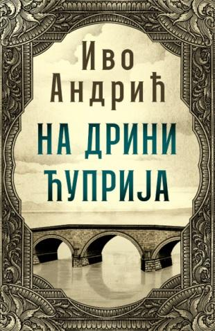

Детаљи књиге

На Дрини ћуприја
Аутор: Иво Андрић
Жанр: Класика, Историјски роман
Формат: Тврди повез
Број страна: 412
Цена: 1.200 РСД
ISBN: 978-86-7346-613-2
Опис: Роман који прати судбину једног моста на Дрини, у Вишеграду, кроз четири века. Мост је симбол трајања и несаломивости пред налетима времена и бурних историјских догађаја на Балкану. Градња моста је задужбина Мехмед-паше Соколовића, а кроз причу о њему Андрић слика читаву историју једног поднебља.
Оставите рецензију
Претходне рецензије
Марко Марковић
Резмек-дело српске књижевности. Свако треба да прочита ову књигу бар једном.
Јелена Јовановић
Веома поучна и дубока прича. Језик је прелеп, мада на моменте захтеван за читање.